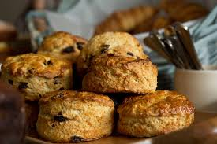

스코틀랜드에서 기원한 빵. 종종 퀵브레드와 혼동되기도 하는데, 국내에서는 비슷한 방법으로 만들기 때문에 헷갈릴 수 있지만, 퀵브레드는 제빵에 속하고 스콘은 제과에 속한다. 애초에 퀵브레드는 강력분에 합성 팽창제를 사용하여 빠르게 빵과 유사한 쫄깃쫄깃한 식감을 내는, 말 그대로 즉석빵이고 스콘은 쇼트케이크에 팽창제가 추가되어서 포슬포슬한 식감으로 만드는 것, 카스테라나 케이크 쪽에 가깝다.
